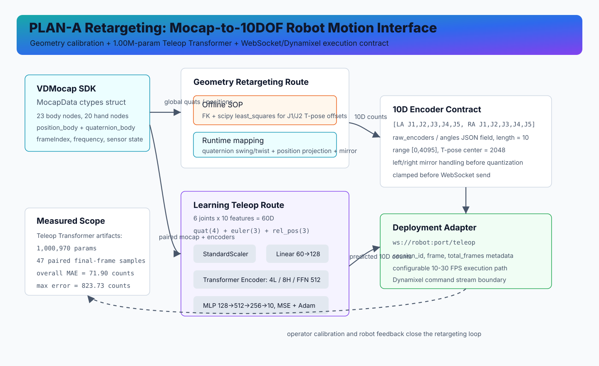

PLAN-A Retargeting: Mocap-to-10DOF Robot Motion Interface
A field-calibrated retargeting interface that converts VDMocap 23-node body pose into 10 raw Dynamixel encoder commands. The stack combines a documented FK / scipy.optimize.least_squares calibration path, low-latency quaternion/position runtime mapping, and a 1.00M-parameter Teleop Transformer prototype for 60D IMU-to-encoder regression.
System Boundary
This page covers the PLAN-A retargeting layer, not the full CVAE or Diffusion Policy stack. Its owned boundary is the motion interface between human mocap and robot actuation: SDK parsing, T-pose calibration, left/right arm mirroring, encoder quantization, paired data capture, model inference, and WebSocket delivery.
Architecture

The diagram separates the documented geometry calibration route, runtime retargeting route, learning-based regression route, and the 10D WebSocket execution contract.
Interface And Data Contract
| Boundary | Contract | Evidence |
|---|---|---|
| VDMocap SDK | ctypes MocapData with 23 body nodes, 20 hand nodes per side, 52 ARKit face blendshapes, positions, quaternions, gyro, acceleration, velocity, and sensor states. | vd_mocap_listener_struct.py:28-130 |
| Geometry runtime | Upper/lower arm quaternions are mapped into [LA J1,J2,J3,J4,center, RA J1,J2,J3,J4,center], clipped to [0,4095], and sent as angles. | calibrate_all_joints.py:215-298, 301-437, 522-667 |
| Learning route | Six arm joints produce 60D features: quaternion(4), Euler radians(3), and hip-relative position(3), then regress to 10 raw encoder counts. | train_teleop_transformer.py:21-35, 143-243 |
| Robot adapter | JSON files may contain raw_encoders or angles; every frame must contain exactly 10 values and is clamped before WebSocket send. | send_json_to_robot.py:19-34, 116-151, 231-306 |
Calibration And Runtime Mapping
FK / Least-Squares SOP
The calibration note defines J1 as world-X rotation and J2 as local-Z rotation after J1. The documented solver builds fk_upper_arm(J1,J2,L)=Rx(J1)Rz(J2)[L,0,0], solves the residual with least_squares, subtracts T-pose offsets, then maps degrees into encoder counts with 2048 + theta * 4096 / 360.
Realtime Quaternion / Position Paths
calibrate_all_joints.py extracts J1/J2 and J3/J4 through quaternion decomposition and parent-rotation removal. calibrate_all_joints_position.py adds a 10 cm shoulder offset, computes J2 from the arm-vector projection, and supports 30-frame current T-pose calibration.
Teleop Transformer Prototype
The learning-based route is a compact regression model rather than a VLA policy. It standardizes 60D IMU features, projects them with Linear(60 -> 128), adds a learnable (1,1,128) positional parameter, runs a 4-layer / 8-head Transformer Encoder with 512-wide FFN, then uses a 3-layer MLP to predict 10 encoder counts. Training uses MSE, Adam at 1e-4, ReduceLROnPlateau, 200 epochs, and saved IMU/encoder scalers.
| Component | Setting |
|---|---|
| Input | 60D = 6 arm joints x (quat 4 + euler 3 + position 3) |
| Backbone | Linear 60->128 + Transformer Encoder, 4 layers, 8 heads, FFN 512, dropout 0.1 |
| Head | MLP 128->512->256->10 |
| Artifacts | best_teleop_transformer.pth, scaler_imu.pkl, scaler_encoder.pkl |
Realtime Deployment
Realtime inference uses the same 60D extraction from a live MocapData struct, inverse-transforms the predicted encoder counts, clamps every value to [0,4095], then sends {angles, session_id, frame, total_frames} over /teleop. The learning controller defaults to 30 Hz, while the broader PLAN-A execution document reports a 10 FPS Dynamixel trajectory path for generated action sequences.
Results And Limits
| Metric | Value | Scope |
|---|---|---|
| Total samples | 47 | paired final-frame mocap/encoder evaluation |
| Overall MAE | 71.90 encoder counts | computed by batch test summary |
| Max error | 823.73 encoder counts | largest outlier in the sample set |
| Per-joint MAE range | 38.05 - 108.61 counts | best/worst joint mean absolute error |
Interview-Ready Technical Points
- Explain why global mocap quaternions cannot be sent directly to robot joints: T-pose offsets, mirror symmetry, encoder center, and left/right motor direction must be handled before actuation.
- Defend the model as a regression prototype: 60D feature contract, 1.00M parameters, StandardScaler on both domains, and 47-sample final-frame MAE with visible outliers.
- Separate policy, retargeting, and controller rates: generated PLAN-A trajectories use a documented 10 FPS execution path, while the live Teleop Transformer controller has a configurable 30 Hz loop.